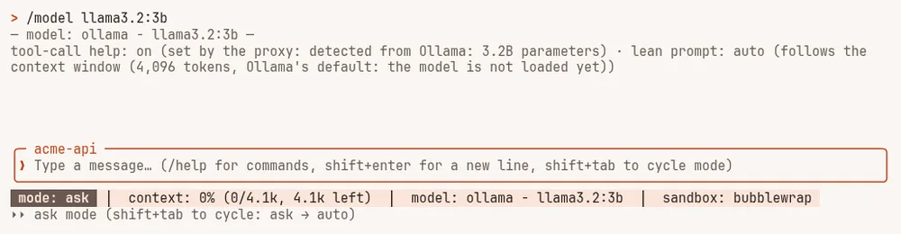
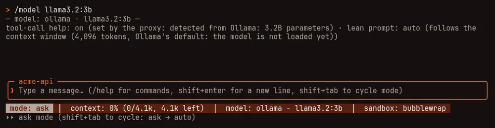
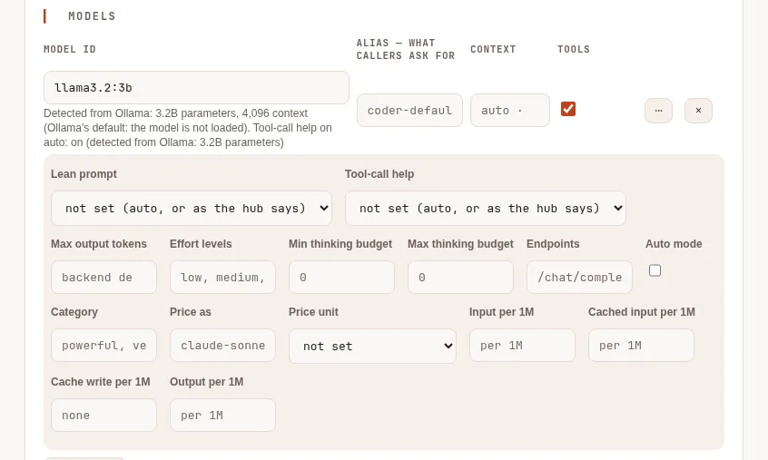
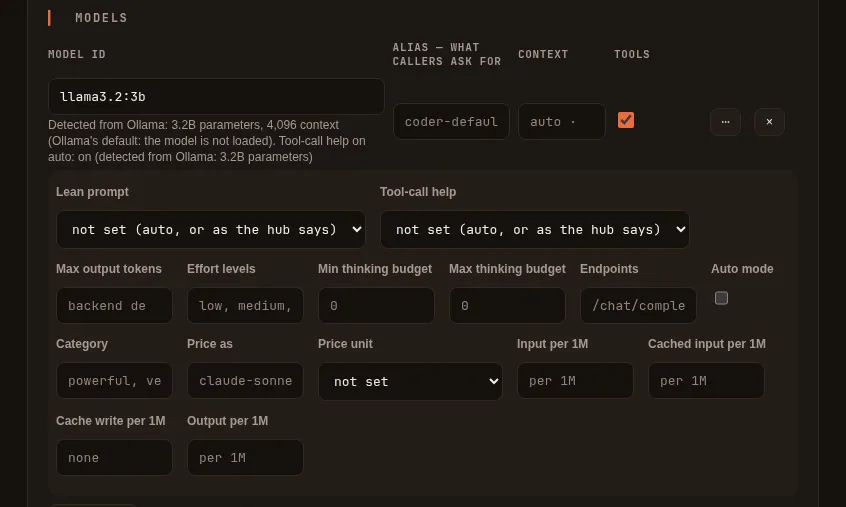
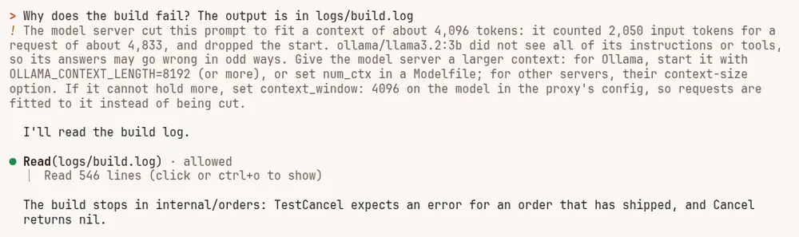
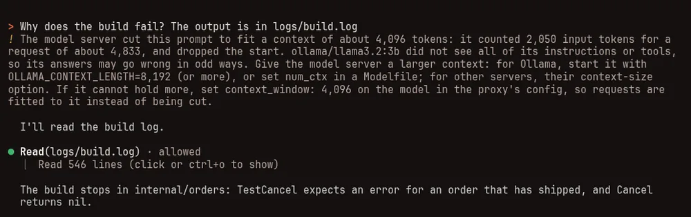

The proxyModels and providers10 min read
Small models #
On this page
A model of a few billion parameters on your own machine (llama3.2:3b on Ollama, a 7B coder on llama.cpp or LM Studio) can do real work, but it trips where a large model does not: it calls a tool it cannot use, writes a call as plain text, sends an empty file, or never sees the start of its instructions because its server cut the prompt. Maple has two settings for such a model, tool-call help and lean prompt, and it reads each model's context window from the server, so a small model gets a request it can hold and help where it usually stumbles. Nothing changes for a large model.
In plain words #
Most of the time there is nothing to do. Add your model server on the setup page (Configure, Providers,
+ Add provider, then Detect models), and the proxy asks the server about each model: how big it is and how
much of a conversation it holds right now. Pick the model in the harness with /model, and one line tells you what
Maple decided for it and why:


/model llama3.2:3b in the harness: tool-call help is on because Ollama says the model has 3.2 billion parameters, and lean prompt follows the window. A demo setup with a stand-in Ollama server.- Tool-call help is on for a model of 8 billion parameters or fewer. The model meets a short list of the tools it needs most (read, write and edit files, run a command, search), with the rest named so it can ask for one. When it slips, Maple hands it back the exact call to make instead of a vague error.
- Lean prompt sends a shorter first request when the full one would crowd the model's window, so the model has room left to work.
- When a server cuts a prompt anyway (it keeps the end and drops the start), the harness says so once per model, with what to do. See A prompt cut to fit the context.
Both settings are auto by default. Turn one on or off for a model when auto guesses wrong: in the harness
(/settings, for you) or on the proxy (the model's ⋯ on the providers form, for everyone who uses that proxy).
Ollama's own default context is small: 4,096 tokens on a machine with under 24 GB of graphics memory, according to Ollama's documentation (not measured by us). That is shorter than an agent's usual first request. If you use Ollama, give it a larger context first: it is the single change that helps most.
Tool-call help #
harness.tool_call_help (harness) and providers[].models[].tool_call_help (proxy): auto, on or off.
Default: auto.
Extra help for models that make tool calls badly:
- The core tools first. The model is offered the tools it needs most, in full. The others are named in
tool_search, so it can load one when it needs it, instead of reading every description up front. - A short tool list.
tool_searchlists the other tools by name only, not with their full descriptions. - Corrections that show the call. When the model writes a call out as text instead of making it, or makes one that cannot run, the reply to it shows the exact call to make.
- Guards for a small model's usual mistakes. A write that would leave a file empty is held back and handed back to the model; the same write sent again is not written twice, and the turn ends as finished instead of going round in circles.
auto turns it on for a model of 8 billion parameters or fewer: by the size its model server states (Ollama,
llama.cpp, LM Studio), else by the size in its name (llama3.2:3b, qwen2.5-coder:7b), else for a model with a small
context window that the server reported. Otherwise it is off. Turn it on for a model that keeps writing calls as
text, or whose size Maple cannot tell (an alias such as coder on a server that does not state a size). Turn it
off if it gets in the way of a capable model.
In /settings, type call help to find it:
/settings, tool_call_help: left and right choose, Enter saves it to your config.yaml, and it applies at once (the row says now).Lean prompt #
harness.lean_prompt (harness) and providers[].models[].lean_prompt (proxy): auto, on or off. Default:
auto.
A shorter first request for a model whose context window would not hold the full one: the core tools in full, and
the system prompt without the parts that describe the other tools. auto uses it when the full first request would
take more than half of the window the proxy reports for the model, so a model in a large window keeps the full
request. On always sends the short one (careful: a large model then loses tool descriptions it could use).
Off never does.
Tool-call help already starts with the core tools, so for a small model the two usually go together. Lean prompt is the one that matters for a larger model in a small window, for example a 14B model on a server started with a short context.
/settings, lean_prompt.Measured #
From Maple's own CI check (one task: create a file holding one word; llama3.2:3b on Ollama with Ollama's default context, on a CPU runner; 2026-11-23). Before the shorter first request, every first request was counted at 2,050 input tokens: Ollama had cut it. After it, 9 of 10 first attempts passed across two builds (5 of 5 on the second), each first request counted at 2,970 tokens, not cut. Measured, but one task, one model and ten attempts: an indication, not a benchmark.
Context window #
The context window is how much of a conversation a model holds at once, in tokens. The proxy reads it from the server, so the harness can fit requests into it (and the lean prompt can decide). It reads the window the model runs with now, not the longest it was trained for: Ollama runs llama3.2 with 4,096 tokens by default even though the model was trained for 131,072.
| Server | Size | Window |
|---|---|---|
| Ollama | /api/show (the model's parameter count) | /api/ps, while the model is loaded. Not loaded yet: Ollama's default of 4,096 is assumed, and replaced by the real one once the model has answered a request |
| vLLM | not stated (the name is used) | max_model_len in its model list |
| llama.cpp | the model list's meta | the model list's meta, else /props (the context per slot) |
| LM Studio | /api/v1/models | the loaded model's context, else its maximum |
| Other OpenAI-compatible servers | not stated | whatever their model list reports |
A context_window you set on the model in the proxy's config always wins. Set one only for a server that reports
nothing, or reports the wrong thing. On the providers form, Detect models shows what the server said under each
model's name, and leaves the Context box empty for a window that can change while the server runs (Ollama's, LM
Studio's loaded one), so it is read again rather than frozen into the config:


Raise Ollama's context #
Ollama's OpenAI-compatible endpoint, the one the proxy uses, cannot take a context size per request. Raise it on the Ollama side, either for every model:
OLLAMA_CONTEXT_LENGTH=16384 ollama serveor for one model, with a Modelfile:
FROM llama3.2:3b
PARAMETER num_ctx 16384ollama create llama3.2-16k -f Modelfileand add llama3.2-16k on the providers form (Detect models finds it). When Ollama runs as a system service, set
OLLAMA_CONTEXT_LENGTH in the service's environment instead (for systemd, systemctl edit ollama and an
Environment= line). These are Ollama's own settings, as its documentation describes them; tested here with a
stand-in server only.
A larger context needs more memory and makes every request slower to read. 16,384 tokens holds an agent's first
request with room to work; if the machine cannot hold more than it has, set context_window on the model in the
proxy's config to what the server really runs with, so requests are fitted to it instead of being cut.
A prompt cut to fit the context #
Some servers, Ollama among them, cut a prompt that is longer than the context and answer anyway. The model never sees the start of its instructions or its tools, and its answers go wrong in odd ways. When the counts in a reply show that, the harness says so, once per model in a session, and the proxy writes it once per model to its log:


What to do, in order:
- Give the server a larger context.
- If it cannot hold more, set
context_windowon the model in the proxy's config to the context the server really runs with. Requests are then fitted to it instead of being cut. - Check a
context_windowyou set yourself: one larger than the server runs with (often the model's trained length) is a common cause. Left out, the proxy asks the server.
Who decides: the harness and the proxy #
Each setting is decided per model, first match wins:
- the harness's per-model setting:
harness.tool_call_help_modelsorharness.lean_prompt_models; - the harness's setting for every model:
harness.tool_call_helporharness.lean_prompt, when it isonoroff; - what the proxy says for the model: its own
onoroff, else, onauto, its decision from what the server stated (tool-call help) or the window it reports (lean prompt); - a proxy that says nothing (one older than 3.2): the harness's own reading of the model's name or window.
So the harness setting is yours alone; the proxy setting is for everyone who uses that proxy. On the proxy, a model with nothing chosen (not set) follows its hub when it comes from one; auto decides on this proxy whatever the hub said. A hub passes its settings and decisions on to the proxies connected to it.
In the harness's config.yaml:
harness:
tool_call_help: auto # auto, on or off, for every model
lean_prompt: auto
tool_call_help_models: # per model, by the name the proxy lists (an alias included)
"coder": "on"
lean_prompt_models:
"qwen3:14b": "on"On the proxy (or on the providers form, the model's ⋯):
providers:
- id: ollama
type: ollama
base_url: http://127.0.0.1:11434/v1
models:
- id: llama3.2:3b
supports_tools: true
tool_call_help: "on" # auto (the default), on or off
lean_prompt: autoQuote "on" and "off" in YAML. /model shows the result and where it came from (set in harness.tool_call_help,
set by the proxy: detected from Ollama: 3.2B parameters, follows the context window).
Other tools #
The proxy never rewrites a request because of these settings. It only advertises them on GET /v1/models, beside each
model, for any client that wants to shape its own requests:
| Field | What it says |
|---|---|
context_window | The window the model runs with now (or the one set in the config) |
context_window_source | Where it came from: config, ollama-loaded, ollama-default (assumed: not loaded yet), vllm, llamacpp, lmstudio-loaded, lmstudio-max, probe |
parameter_count | The model's parameters, as its server states them |
tool_call_help, tool_call_help_reason | on or off, and why, in words |
lean_prompt | auto, on or off |
Clients other than the harness see the fields and may ignore them.
Picking a small model for tool use #
General advice, not measured by us; your models and tasks decide.
- Pick one trained for tool calls. An instruct or chat model whose card lists tool or function calling (on Ollama,
ollama show <model>liststoolsunder its capabilities). A base model, or one without tool support, will not call tools reliably whatever Maple does. - The largest that fits with room for the context. On the same machine, a 7B or 8B model usually calls tools more reliably than a 1B to 3B one; leave memory for a context of 16k tokens or more, which the model needs as much as its weights.
- Do not squeeze it too hard. Very low-bit quantizations tend to hurt structured output such as tool calls more than plain chat.
- A coder model for code. Models tuned for code tend to read and edit files better than general chat models of the same size.
- Small steps. Short, concrete tasks ("create
hello.txtcontaining violet", "fix the failing test inorders_test.go") go better than open-ended ones. Plan with a larger model and hand the steps to the small one if you have both.
What goes wrong and how it shows #
| What you see | Likely cause | What to do |
|---|---|---|
| The warning that the server cut the prompt | The server runs a smaller context than the request | Raise its context, or set context_window to what it really runs |
/model says Ollama's default: the model is not loaded yet | The model has not answered yet, so 4,096 is assumed | Nothing: it is read again once the model has answered. If your Ollama runs a larger context, the line changes after the first reply |
Tool-call help off for a model you know is small | Its size is not stated and its name does not say it (an alias) | Set tool_call_help: "on" for the model, in the harness or on the proxy |
| The model answers in prose and never calls a tool | A model without tool support, or one cut short | Check ollama show for tools; check for the cut warning; try a larger model |
/model says from the model's name or window | The proxy is older than 3.2 and says nothing | Update the proxy, or set the two settings in the harness |
| A large model gets a short first request | lean_prompt set on for it, or a small window reported | Set it auto or off; check the model's context_window |